কাপ্তাই কথন
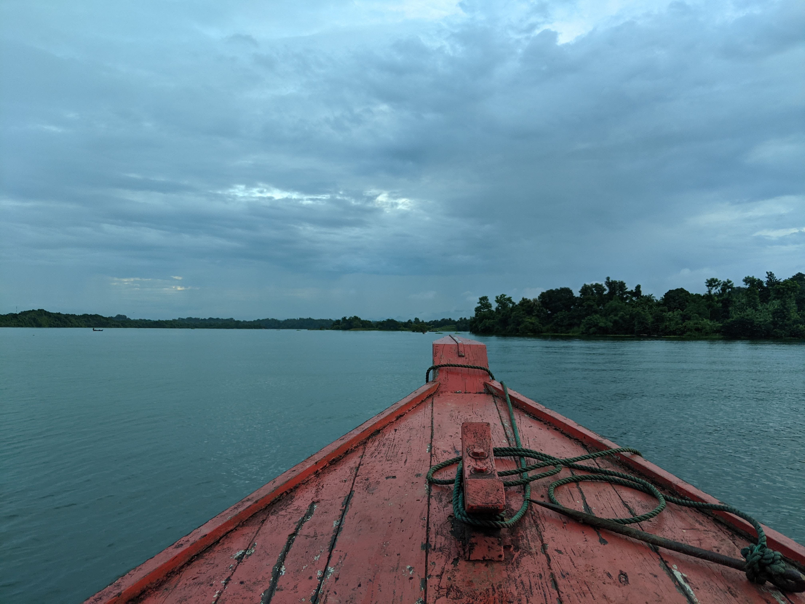
কাপ্তাই
ব্যাকগ্রাউন্ড স্টোরি
সেই ১৪ মার্চ যে ক্লাস বন্ধ হলো, তখন থেকেই বাসার কারাগারে বন্দী। এই বাসায় বসেই করলাম দুই দুইটা সেমিস্টার, একটা অসহনীয় গ্রেডেড টার্ম ফাইনাল। সে যাইহোক, ওগুলো আরেকদিন বলা যাবে। কোভিডের জন্য ২-২ এর পর আর বের হওয়া ও হয়নি। কোথায় আরো ভাবসিলাম ৩-১ এ ইন্ডিয়া ট্যুর দিবো, সব আশায় গুড়েবালি।
এক্সামের মধ্যেই ফাহিমকে বলতিসিলাম ট্যুর প্ল্যান করতে। ফাহিম বললো জনি, জাবের, রাবিদ মিলে প্ল্যান করতিছে। জনির ইচ্ছা তাজিং ডং যাওয়ার, কিন্তু মনে হয় দুই দিনের জন্য নেটওয়ার্ক এর বাইরে থাকা লাগবে, তাই ফাহিম কোনোভাবেই রাজি না। এরপর প্ল্যান করা হলো রাইক্ষং লেক যাওয়ার, সেই অনুযায়ী গ্রুপে পোস্ট দেওয়াও শেষ। কিন্তু তাহমিদ এর মাধ্যমে পারমিশন ম্যানেজ করতে গিয়েই লাগলো বিপত্তি। আর্মি নাকি ঐদিকে পারমিশন দেয় না, গেলে যেতে হবে নিজদের ঝুঁকিতে, এর আগে নাকি কয়েকজন কিডন্যাপ ও হইসে। তাই এই প্ল্যান বাদ। নতুন প্ল্যান হলো বিলাইছড়ি,কাপ্তাই।
এদিকে দেখা গেলো আরেকটা ট্যুর এর প্ল্যান ও হচ্ছে, সিলেটে। সিলেটে অলরেডি দুইবার যাওয়া হইসে, আবার একই সময়ে বগুড়া যাওয়ার ও কথা ছিল। তাই শুধু কাপ্তাই এরটা তেই যাওয়ার সিদ্ধান্ত নিলাম। কিন্তু, পরে ওই ট্যুর এর ছবি দেখে মনে হলো গেলেই পারতাম, এতগুলা মানুষের সাথে এতদিন দেখা হয়না, এই সুযোগে দেখা হয়ে যেত। সে যাইহোক, আসি এবার কাপ্তাই ট্যুর এ।
কাপ্তাই যাওয়ার মানুষ পাওয়া গেলো দশজন। ফাহিম, কৌশিক, সায়েম, স্বর্গ, রুহান, জনি, জাবের, আফনান, জয়ন্ত আর আমি। যাব মুপ্পোছড়া, ন’কাটা, ধুপপানি, শুভলং ঝর্না দেখতে।
২৬ সেপ্টেম্বর : দিন ০
এদিকে নাজিব, রাফিদ, অনন্য রা একদিন আগে একই জায়গাতেই ট্যুর দেওয়া শুরু করসে। তাই বসে উঠার আগে ওদের থেকে শুনে নিলাম ঐদিকের অবস্থা। শুনে তো অবস্থা খারাপ! ওইদিন ওরা মুপ্পোছড়া, নকাটা গেছিলো,আমরা যেটা পরেরদিন যাব। তো বললো ট্রেকিং নাকি অনেক রিস্কি, “জীবন হতে নিয়ে রেখে ট্রেকিং করতে হইসে”| সাথে বৃষ্টি হয়ে নাকি আরো সব পিচ্ছিল হয়ে গেছে। বললো ভালো ট্রেকিং জুতা বা স্যান্ডেল নিয়ে যেতে, নাহলে অনেক কষ্ট হবে।
তো কি আর করা, এসব শুনে হালকা ভয় নিয়েই ব্যাগ গুছালাম। বাস কাউন্টারে পৌঁছে দেখি ডিপার্টমেন্ট এর ই আরেকটা গ্রুপের সাথে দেখা, ওরা যাচ্ছে নাফাখুমের দিকে। তো ওদের সাথে হালকা গল্প করে বাসে উঠে পরলাম সবাই।
২৭ সেপ্টেম্বর : দিন ১
বাস ছিল রাত ৮:৪৫ এর দিকে, তাই কাপ্তাই পৌঁছে গেলাম বেশ সকালেই, ভোর পাঁচটায়। নামলাম কাপ্তাই জলবিদ্যুৎ কেন্দ্রের সামনে। ফজরের নামাজ পড়ে নিলাম পাশের মসজিদে। এই প্রথম জামাতে ফজরের নামাজ পড়লাম, কাপ্তাই পাড়ের ওই শান্ত পরেবিশে ফজরের নামাজের অনুভূতি লিখে বুঝানো মুশকিল। মসজিদের পাশেই জেটিঘাট। আগে থেকেই নৌকা ভাড়া করা ছিল আমাদের, উঠে পড়লাম আমরা সবাই। তখনও সূর্যোদয় হয়নায়, আস্তে আস্তে একটু করে আলো ফুটছে। জেটিঘাটের পাশেই কাপ্তাই বাঁধ, নৌকা থেকেই দেখা যায়।
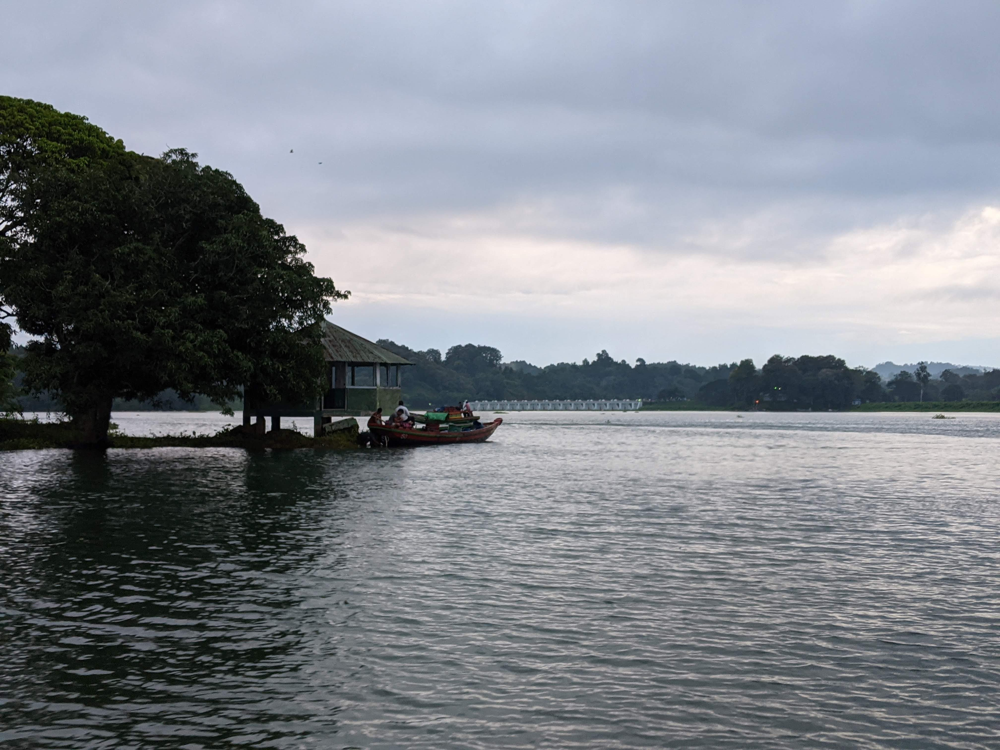
কাপ্তাই বাঁধ
কাপ্তাই থেকে রওনা দিলাম আমরা বিলাইছড়ির পথে, নৌকায় করে দুই ঘণ্টার মতো। নৌকায় বসেই দেখলাম সূর্যোদয়। ম্যান মেড লেক যে এত বড় হতে পারে, এটা কাপ্তাই না আসলে বুঝতাম ই না। কাপ্তাই লেকের বিশালতা যে কতো বেশি এটা এই ট্যুরে বুঝসি, ট্যুরের অর্ধেকের মতো টাইম আমরা কাপ্তাই এই ছিলাম।
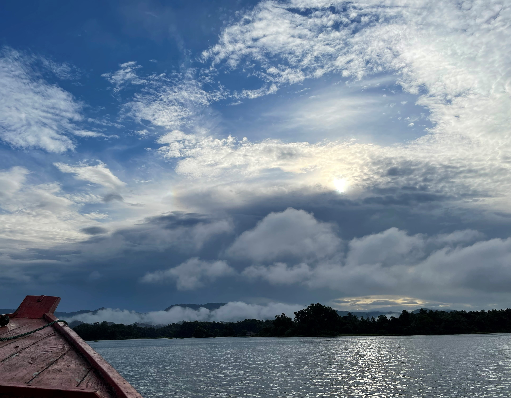
সূর্যোদয়
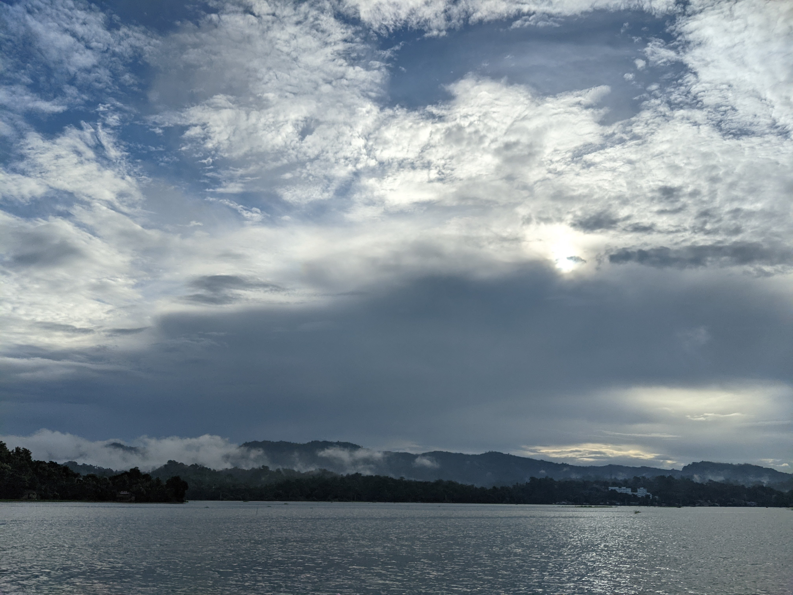
মেঘে ঢাকা পাহাড় । ঐ দেখা যায় বিলাইছড়ি
বিলাইছড়ি যাওয়ার পথে আর্মি ক্যাম্প পড়ে একটা, সেখানে নেমে NID জমা দিয়ে, ছবি তুলে আবার নৌকায় উঠে পড়লাম। ঘণ্টা দুইএকের জার্নি শেষে পৌছালাম বিলাইছড়িতে। উঠলাম নীলাদ্রি রিসোর্টে। ছবির মতো সুন্দর এই জায়গাটা। দুই পাশেই পাহাড়, দূরের পাহাড় বৃষ্টি হলে একদম মেঘ থেকে বৃষ্টি দেখা যায়। এই দৃশ্য যে নিজের চোখে দেখবেনা, তাকে বিশ্বাস করানো মুশকিল। রিসোর্টে ব্যাগ রেখে ফ্রেশ হয়ে বাজারের দিকে আগালাম আমরা। সেখানে নাস্তা করে নৌকায় করে রওনা দিলাম মুপ্পছড়া আর ন’কাটার পথে।

নীলাদ্রি
ট্রেকিং এর প্রথম ১০-১৫ মিনিট শুধুই ধানক্ষেত আর সমতল রাস্তা, এরপরেই শুরু আসল পাহাড়ি পথ। দুই বছরের বেশি সময় পর ট্রেকিং এ নেমে সেই পাহাড়ি পথেই কাহিল। ট্রেকিং এর শেষ ১৫-২০ মিনিটে বেশ কয়েকটা রিস্কি জায়গা, পা ফসকে গেলেই শেষ। পাশের খাদ যে কোথায় নিয়ে যাবে কে জানে। গাইডকে জিজ্ঞেস করি আর কতো দূরে মুপ্পোছড়া, গাইড বলেন এইতো সামনে, কিন্তু সেই সামনে আর আসেনা। শেষের দিকে এমন কাহিল হয়ে গেছি, বললাম যে কালকে আর এই ট্রেকিং এ নাই আমি, যাবনা ধূপপানি :v শেষে আরো কিছুক্ষণ পাহাড় দিয়ে উঠার পর দেখতে পেলাম মুপ্পোছড়া।
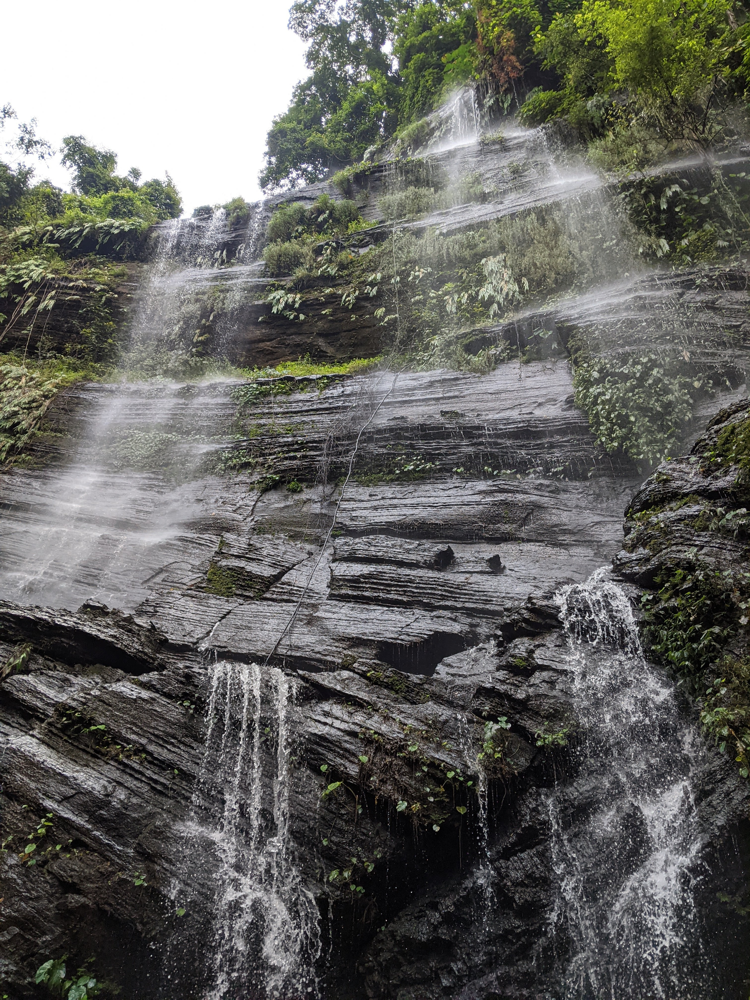
মুপ্পোছড়া
দেখতে অত বড় মনে হয়না, কিন্তু পানির যে গতি! মনে হয় পানির বুলেট পড়ে মাথার উপর। ঝর্ণায় সবাই গোসল করলাম। ঝর্ণায় ভেজার পর পুরা ট্রেকিং এর পরিশ্রম সার্থক মনে হয়। আরো কিছুক্ষন ভিজে বিশ্রাম নিয়ে আবার নিচে নামা শুরু করলাম সবাই। এবারের গন্তব্য ন’কাটা। নামার পথেই পড়ে, কিন্তু একটু অন্য দিকে যাওয়া লাগে। ১৫-২০ মিনিটের নামার পর পৌঁছে গেলাম ন’কাটায়। আমার দেখা সবচেয়ে সুন্দর ঝর্ণা এটা!
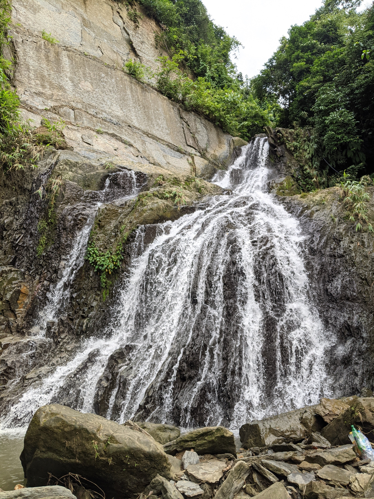
ন'কাটা
এই ঝর্ণাতেও গোসল আর ছবি তুলে আমরা নামা শুরু করলাম। ফেরার পথ টা উঠার পথের তুলনায় অনেক সহজ ছিলো, ঝিরিপথ ই বেশি। ঝিরিপথে হাটা সবচেয়ে আরাম। আবার নৌকায় করে বিলাইছড়ি ফিরে আসলাম আমরা।
কটেজে ফিরে ফ্রেশ হয়ে পাশেই একটা হোটেলে খেতে চলে গেলাম। ততক্ষনে মেঘ করে এসেছে। বৃষ্টির আগের সুন্দর ঠান্ডা বাতাস আর গন্ধ! আগে থেকেই অর্ডার দেওয়া ছিল। ভাত, মুরগি ভুনা, ডাল, সবজি, সালাদ। আমি, সায়েম, জয়ন্ত আর আফনান খেতে বসলাম। বাকিরা আগে খেয়ে ফ্রেশ হতে গেছে। এই সুন্দর আবহাওয়াতে এতক্ষণ ট্রেকিং এর পর খাবার অমৃৎ। ডাল, মুরগি ভাত ও যে এতো মজা করে খাওয়া যায় এরকম ট্যুর না দিলে বুঝা যায়না!
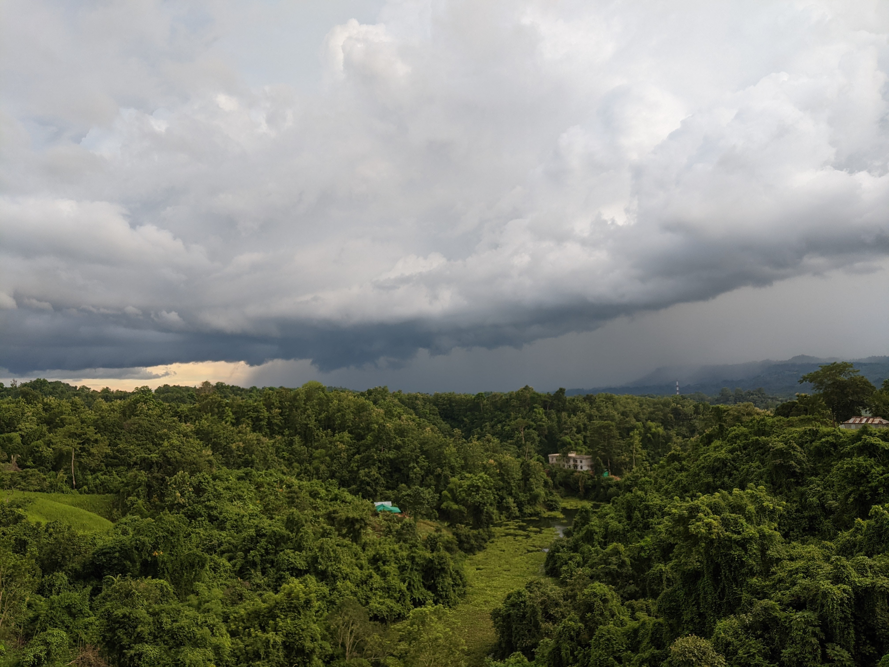
আজকের দিনের ট্রেকিং এখানেই শেষ। বিকালে একটু বিশ্রাম নিয়ে নীলাদ্রির উঠানে বসে গল্প করলাম সবাই। সন্ধায় খবর আসলো, টার্ম ব্রেক নাকি ২ মাস হবে, নোটিশ আসছে। সবাই মিলে হতাশ হয়ে কিছুক্ষণ প্রশাসনের উপর রাগ ঝেড়ে রাতের বার্বিকিউ খেতে গেলাম।
২৮ সেপ্টম্বর : দিন ২
ভোরে নিলাদ্রি থেকে ব্যাগ নিয়ে কটেজ ছেড়ে দিয়ে আমরা উঠে পড়লাম নৌকায়। গন্তব্য উলুছরি। ঘণ্টা দুয়েকের বোট জার্নি শেষ উলুছরি থেকে আবার ডিঙ্গিতে করে যাত্রা শুরু ধূপপানির পথে।
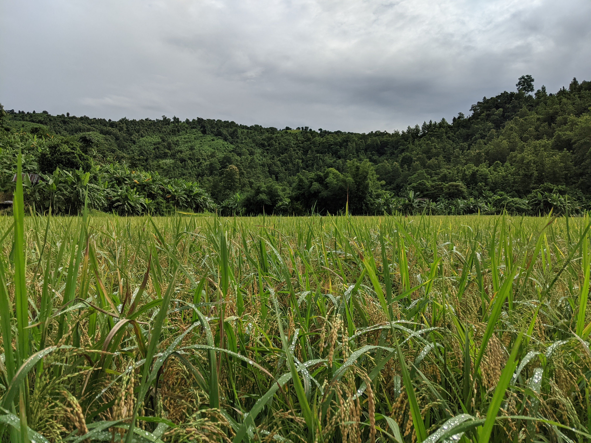
উলুছরি
আগের মতোই ট্রেকিং এর শুরুতে সমতল পথ ১৫-২০ মিনিট। কিন্তু আজকের পথ অনেক। যাওয়া আসা মিলে প্রায় ৪-৫ ঘণ্টার ট্রেকিং। আর আগের রাতের বৃষ্টি তে পুরা কর্দমাক্ত হাঁটার পথ। একবার তো পড়েই গেলাম কাদায়। স্যান্ডেল গেলো আটকে! ধূপপানি যাওয়ার পথে দুইটা পাহাড় উঠা লাগে, আর একটা নামতে হয়। এবারের পথ আগের দিনের মতো রিস্কি না। পাশ দিয়ে দেখা যায় দূরের আরো পাহাড়। কিন্তু পথ আর শেষ হয়না। দুইটা পাহাড় পাড়ি দিয়ে দেড় ঘণ্টা পর ধূপপানি পাড়ায় গিয়ে আমরা বিশ্রাম নিলাম। পাহাড়ি কলা, শশা, লেবুর শরবত আর পানি খেয়ে আধা ঘণ্টা বিশ্রাম নিয়ে আবার শুরু করলাম। আরো ৩০ মিনিটের মতো ট্রেকিং করে পৌঁছে গেলাম ধূপপানি ঝর্ণায়। আমার দেখা সবচেয়ে বড় ঝর্ণা এটা! আগের রাতে অনেক বৃষ্টি মিলায়ে ঝর্ণাতে পানিও অনেক বেশি। আবারো ঝর্ণায় ভেজার পর এতক্ষণ ট্রেকিং এর কষ্ট স্বার্থক মনে হয়। সবাই মিলে ঘন্টাখানেক ছবি তুলে, গোসল করে ফেরা শুরু করলাম।
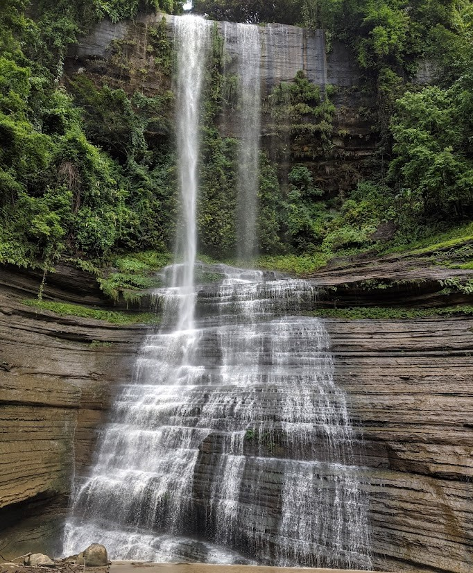
ধূপপানি
ফেরার পথ যেন শেষ হতে চায়না। ঘণ্টা দুয়েক ট্রেকিং করে নৌকায় ফিরে আসলাম। গন্তব্য এখন রাঙামাটি। নৌকায় করে ৩-৪ ঘণ্টার পথ। নৌকায় উঠে ভাত, আলু ভর্তা, ডাল আর ছোট্ট এক টুকরা মাংস দিয়ে কোনমতে খেয়ে নিলাম আমরা। রাঙামাটি ফেরার পথে নৌকাতেই আমরা সূর্যাস্ত দেখলাম। প্রথম দিনের কাপ্তাই এর সূর্যোদয় এর মতই আজকের সূর্যাস্তের অপুরূপ সৌন্দর্য। চার ঘণ্টার বোট জার্নি শেষে শহরে পৌঁছে উঠলাম হোটেলে। রাতের খাবার পাশের রেস্টুরেন্টেই।
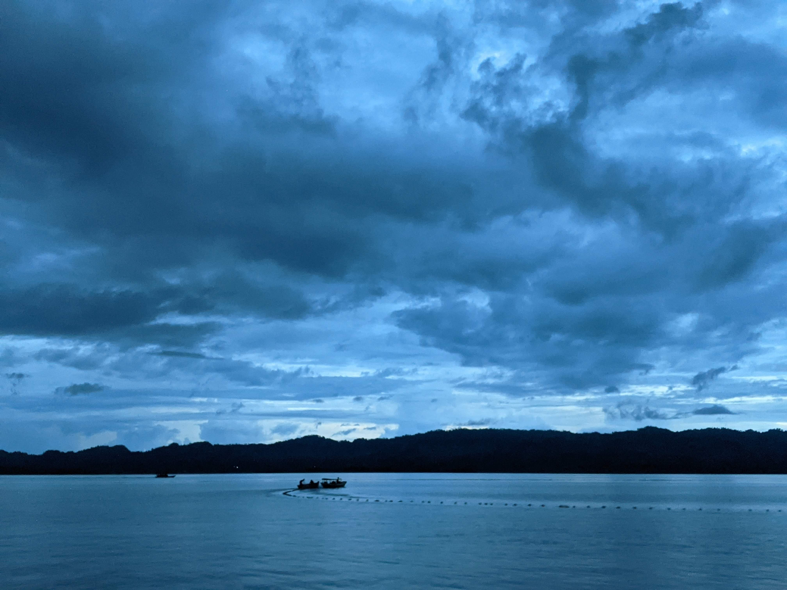
২৯ সেপ্টেম্বর : দিন ৩
দুই দিনের কাহিল করা ট্রেকিং শেষে আজকে শুধু ঘুরাফেরা। সকলের নাস্তা শেষ করে আবার বোটে উঠলাম। আজকের প্ল্যান রাঙামাটি শহরের আশেপাশে যা আছে ওগুলো দেখা।
প্রথমেই গেলাম শুভলং এ, সেখানের পর আরো কিছু ঝর্না দেখলাম নৌকাতেই। এরপর দুপুরের খাবারের জন্য গেলাম ছোট্ট একটা দ্বীপ রেস্টুরেন্টে। নাম পেডা টিং টিং। অর্ডার দিলাম বাঁশ কোরোল আর ব্যাম্বু চিকেন। কেউ দিল মাছ আর শুটকি। খাবার অর্ডার দিয়ে আমরা।বসলাম কাপ্তাই পাড়ে। অনলাইন টার্ম ফাইনালের ফিলোসফিকাল আর থিওলজিকাল তর্ক বিতর্ক করতে করতে ঘণ্টা খানেকের মধ্যে খাবার প্রস্তুত হয়ে গেল। বাঁশ ও যে খাওয়া যায়, লাইক লিটারেলি খাওয়া যায় এই প্রথম দেখলাম। সারাজীবন ধরে খাওয়া বাঁশ যেমন সুখকর ছিলো না, এই খাবার বাঁশ ও তেমন। তেমন স্বাদ নেই বললেই চলে। ব্যাম্বু চিকেন ভালই ছিল যদিও। সেখান থেকে খাবার শেষ করে রওনা দিলাম আরন্যক রিসোর্টের উদ্দেশ্যে। পথে দেখা হয়ে গেলো ঝুলন্ত ব্রিজ ও। অতিরিক্ত বৃষ্টিতে ঝুলন্ত ব্রিজ হয়ে গিয়েছে ডুবন্ত!

শুভলং
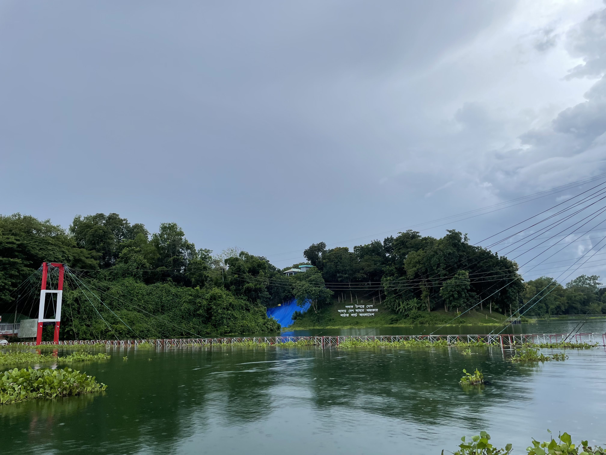
ঝুলন্ত ব্রিজ

পেডা টিং টিং
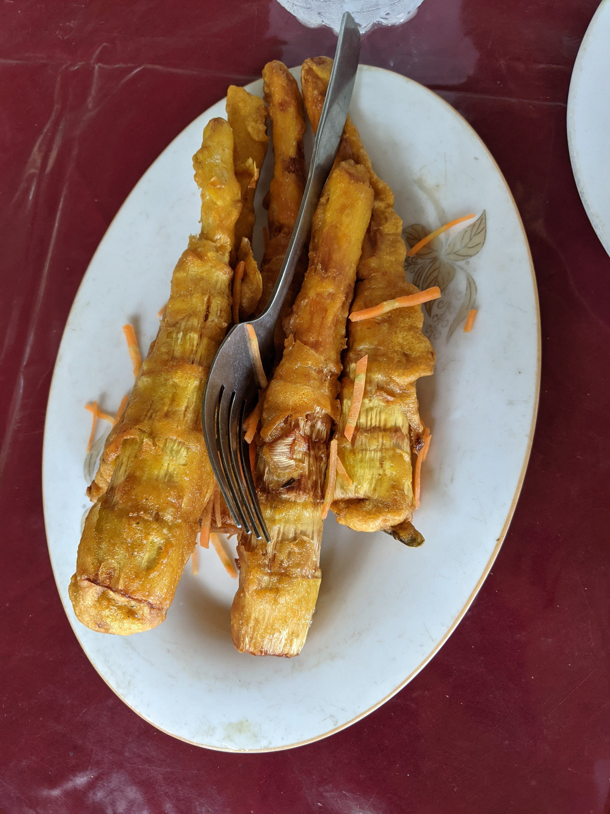
বাঁশ কোরোল
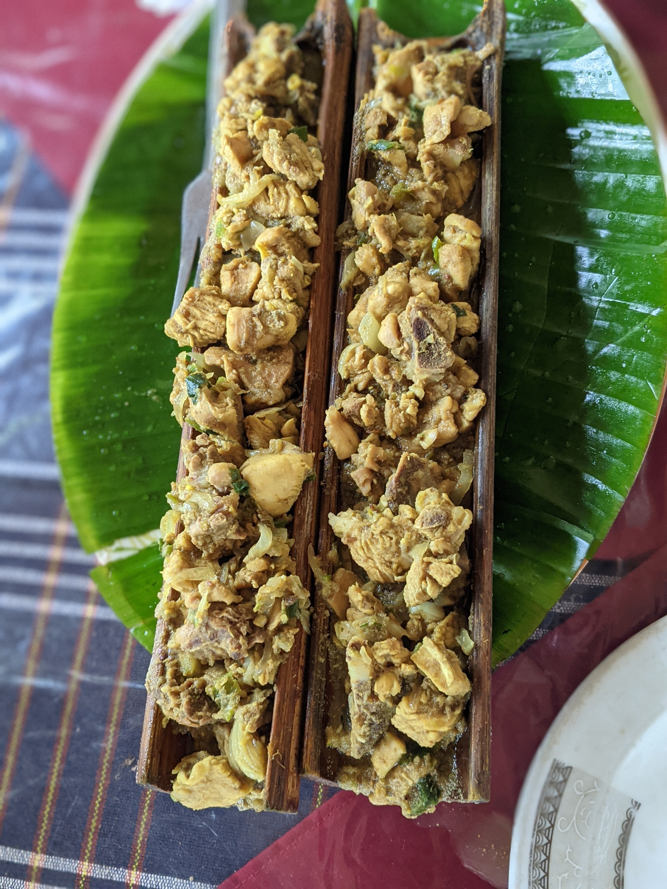
ব্যাম্বু চিকেন
এর কিছুক্ষণ পরে পৌঁছে গেলাম অরণ্যকে। বেশ সুন্দর গুছানো আর্মিদের বানানো রিসোর্ট। ফ্যামিলি নিয়ে ঘোরার জন্য বেশ সুন্দর জায়গা। ঘুরতে ঘুরতে আমরা পেয়ে গেলাম সাকিব আল হাসানের ওয়ার্ল্ড কাপের সেই বিখ্যাত পোজের মতো একটা বেঞ্চ। সেখানে গিয়ে তোলা হলো ছবি ! ঠিক হলো যেবার ৪ পাবো, সেবার এটা ডিপি দিবো :3
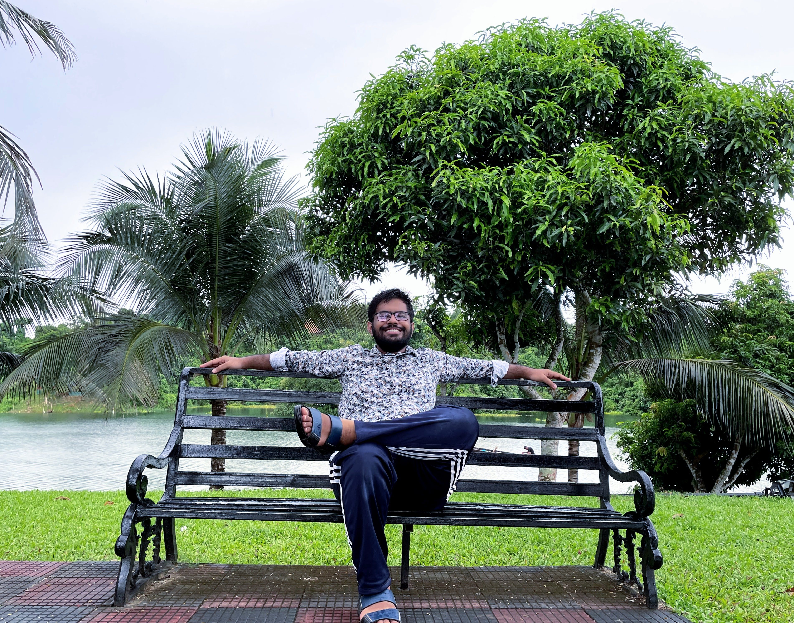
আরণ্যক থেকে একটা বোটে করে যাওয়া লাগে ওদের পুলে, ওখানে গিয়ে কিছুক্ষন পুলে থেকে আমরা হোটেলের পথ ধরলাম।
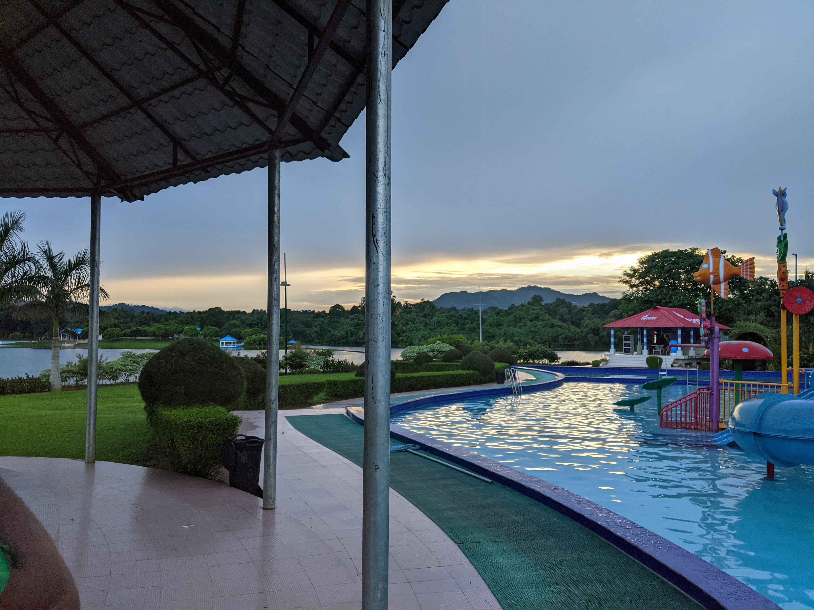
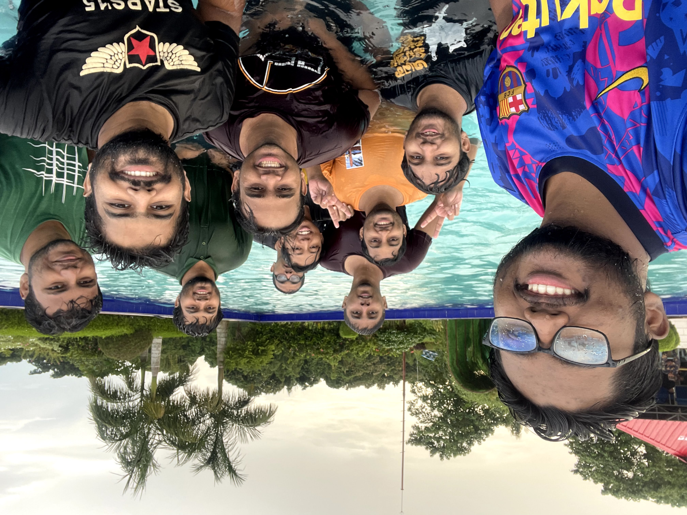
আরণ্যক
শেষ হলো পোস্ট অ্যাপক্যালিপটিক যুগের প্রথম ট্যুর।
ছবি কৃতজ্ঞতা : কৌশিক , সায়েম , স্বর্গ